Switch Statement Con't
var text;
var fruits = document.getElementById("myInput").value;
// fruits represents the input value variable above.
switch(fruits) {
// Each case below checks against the input value/string
// and if true/or a match, then resets the text variable
// to the particular string value
case "Banana":
text = "Banana is good!";
// break, breaks out of the code block
// i.e. a match is found and the code ends
break;
case "Orange":
text = "I am not a fan of orange.";
break;
case "Apple":
text = "How you like them apples?";
break;
// If no match is found from the cases above, the following
// default value will be applied
default:
text = "I have never heard of that fruit...";
}
Decision Making & Conditionals
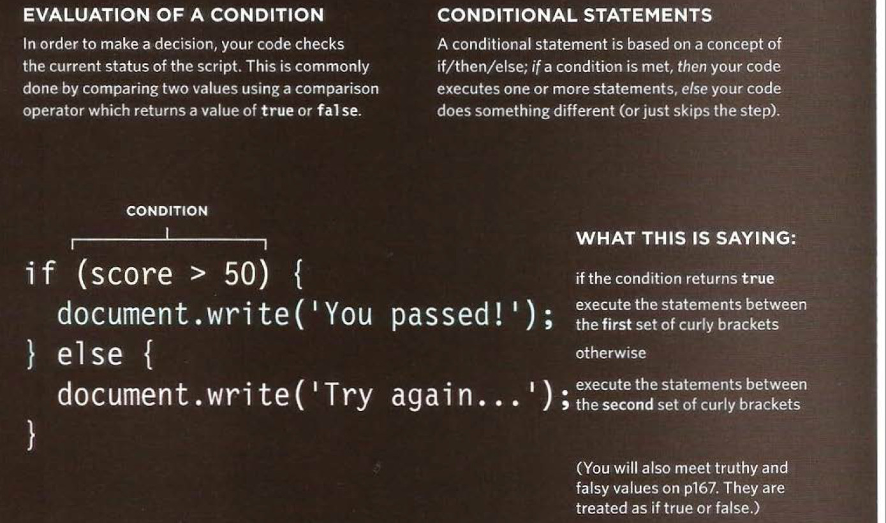Image courtesy of Jon Duckett: "Javascript and jQuery", John Wiley & Sons Inc 2014
Testing Template
//My testing variables
var a, b, c, d, e, f;
a = 5;
b = 7;
c = 10;
d = 55;
e = 'a string';
f = 10;
//My array of items for testing
var myArray = [5, 7, 10, 'string', 10, 55, 2000, false, 'another string'];
//We can log the condition and test for true or false results
console.log((b >= a) && (c == f));
Comparison Operators
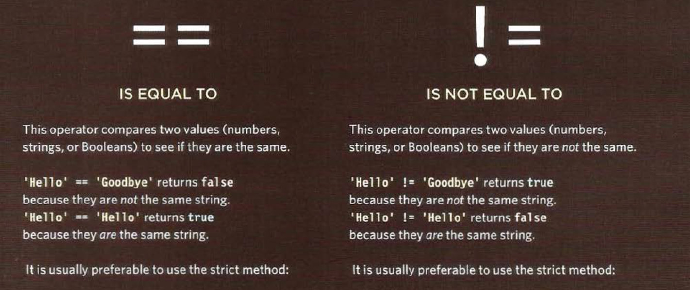Image courtesy of Jon Duckett: "Javascript and jQuery", John Wiley & Sons Inc 2014
Comparison Operators
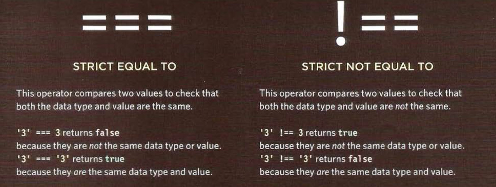Image courtesy of Jon Duckett: "Javascript and jQuery", John Wiley & Sons Inc 2014
Comparison Operators
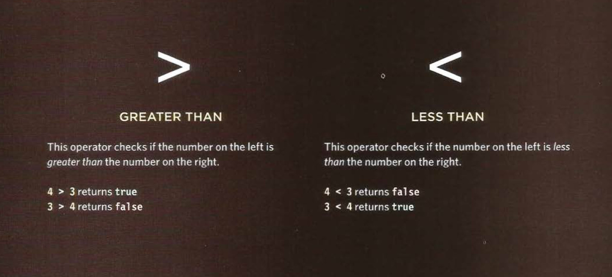Image courtesy of Jon Duckett: "Javascript and jQuery", John Wiley & Sons Inc 2014
Comparison Operators

Image courtesy of Jon Duckett: "Javascript and jQuery", John Wiley & Sons Inc 2014
Comparison Operators
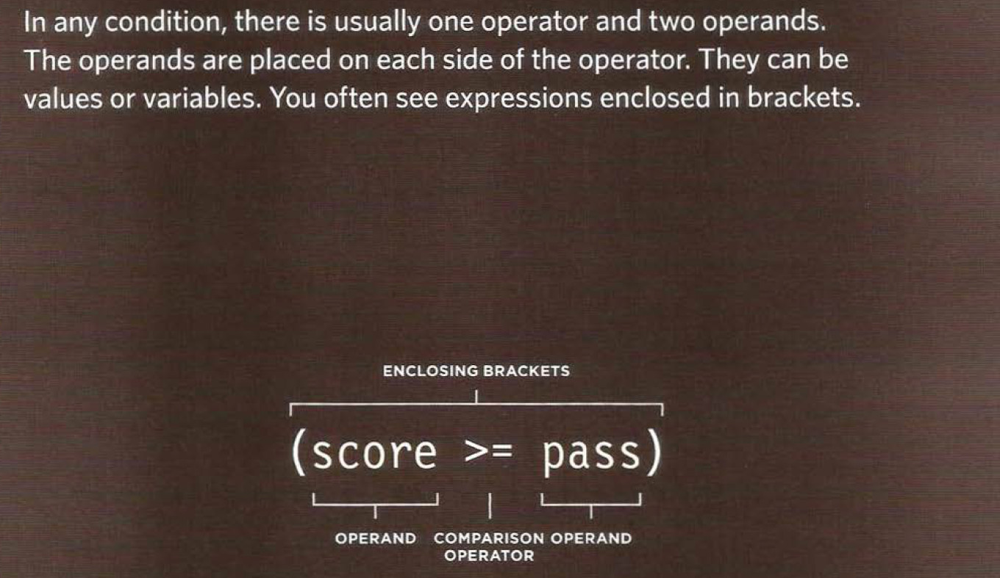Image courtesy of Jon Duckett: "Javascript and jQuery", John Wiley & Sons Inc 2014
Comparison Operators
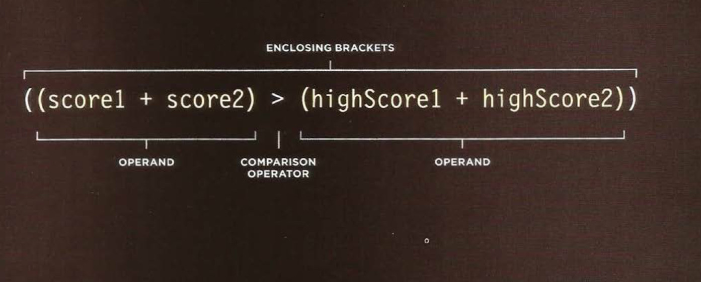Image courtesy of Jon Duckett: "Javascript and jQuery", John Wiley & Sons Inc 2014
Comparison Operators
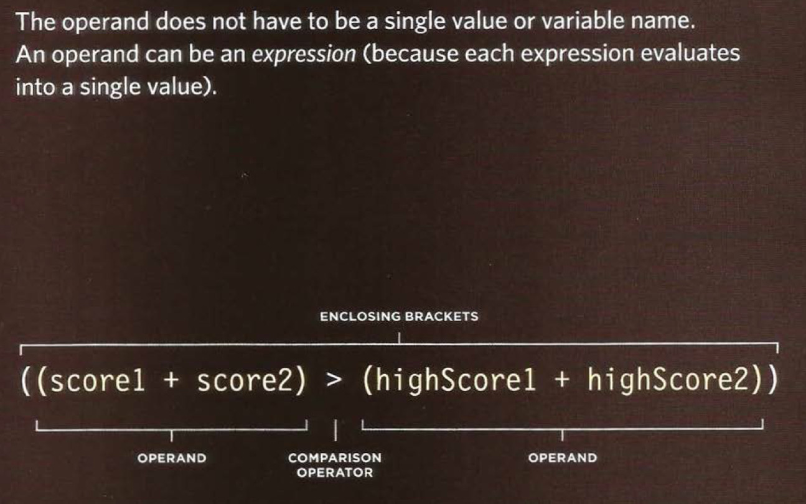Image courtesy of Jon Duckett: "Javascript and jQuery", John Wiley & Sons Inc 2014
Logical Operators
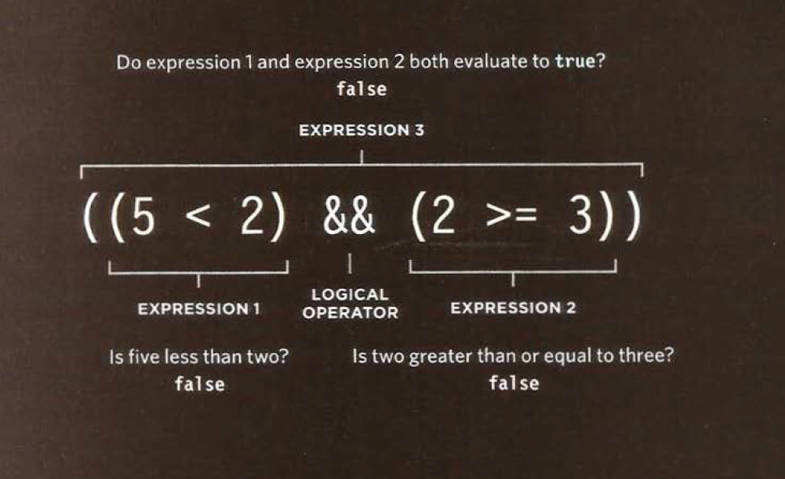Image courtesy of Jon Duckett: "Javascript and jQuery", John Wiley & Sons Inc 2014
Logical Operators
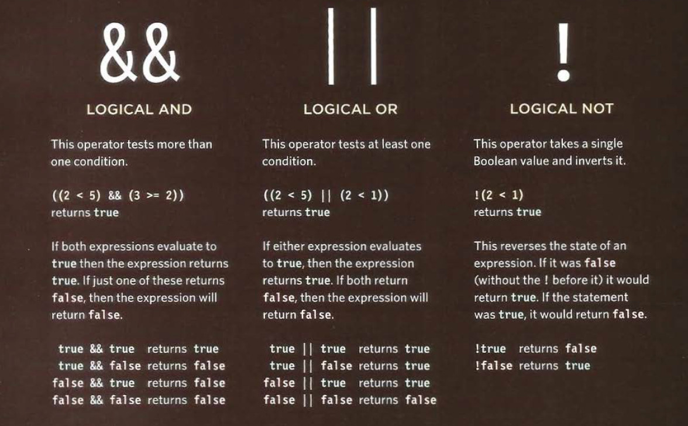Image courtesy of Jon Duckett: "Javascript and jQuery", John Wiley & Sons Inc 2014
If // If Else
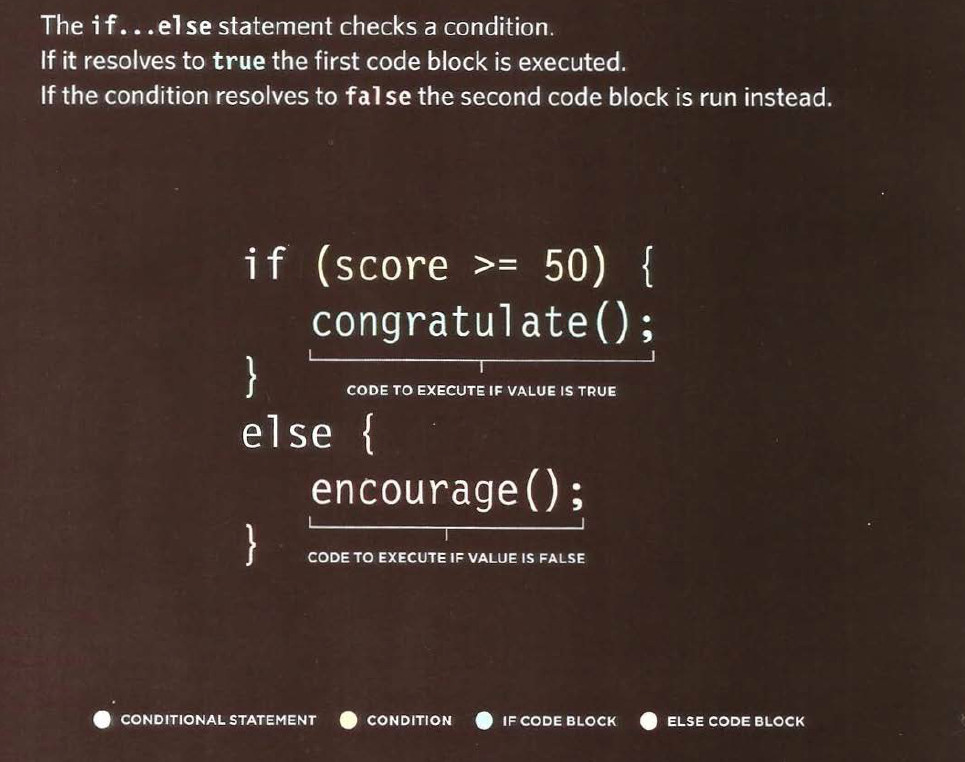Image courtesy of Jon Duckett: "Javascript and jQuery", John Wiley & Sons Inc 2014
Duckett example of if/else witing the DOM
1. Research the duckett example and make some changes/adjustments to the conditional in the example.
http://javascriptbook.com/code/c04/if-statement.html2. ***Checkpoint Apply a conditional to some of your previous code
- It should effect the DOM - (no console.log)
- It should make use of both comparison operators and logical operators
- Use a function to wrap and invoke your conditional
- Once working, please 1. comment your code and 2. push to github
- Name the github repo "conditional-demo"
DOM Queries
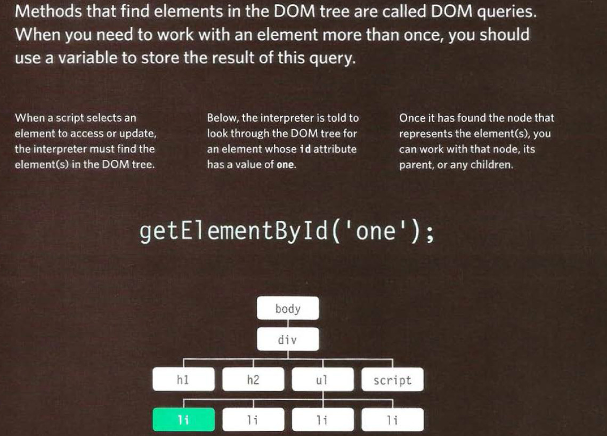Image courtesy of Jon Duckett: "Javascript and jQuery", John Wiley & Sons Inc 2014
DOM Queries
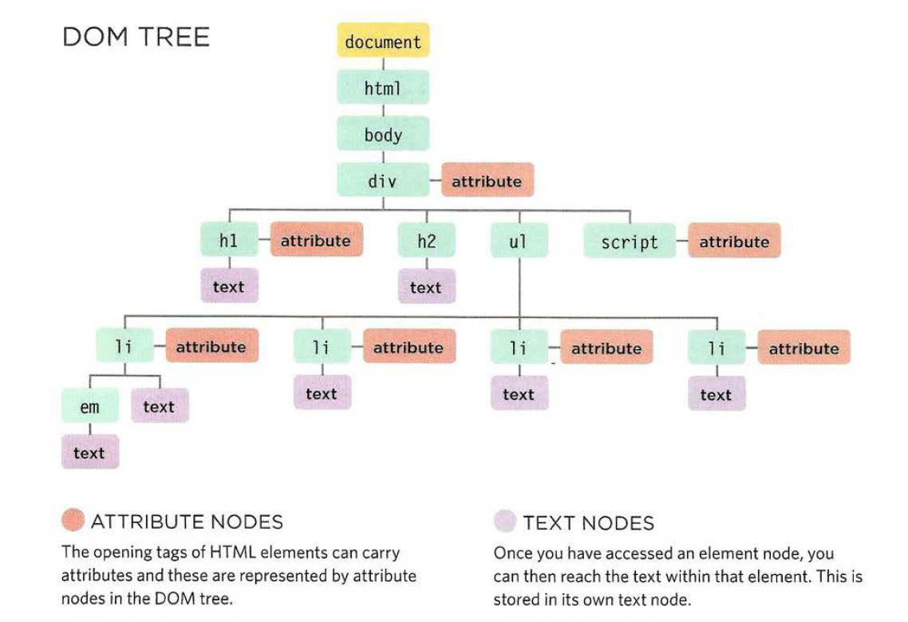Image courtesy of Jon Duckett: "Javascript and jQuery", John Wiley & Sons Inc 2014
DOM Queries
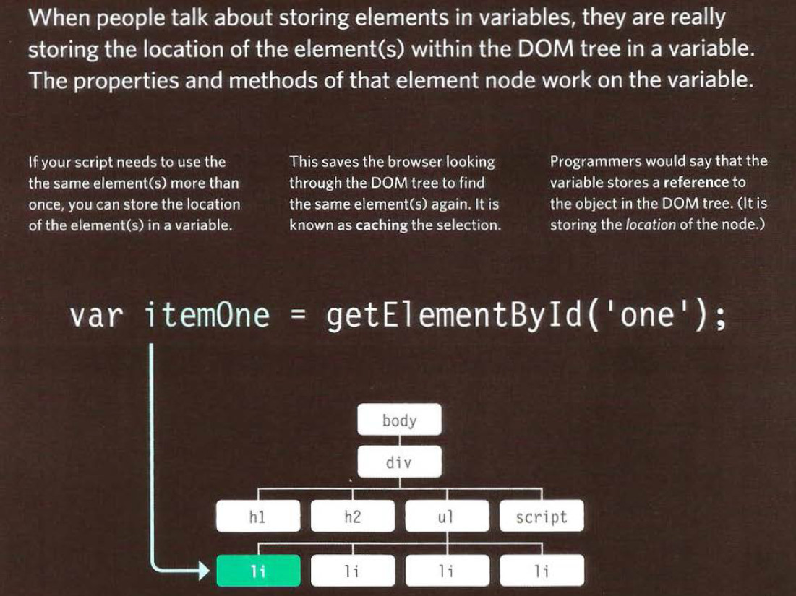Image courtesy of Jon Duckett: "Javascript and jQuery", John Wiley & Sons Inc 2014
DOM Queries
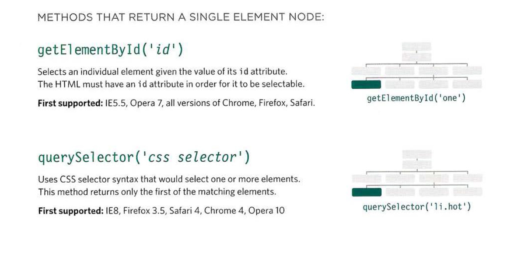Image courtesy of Jon Duckett: "Javascript and jQuery", John Wiley & Sons Inc 2014
DOM Queries
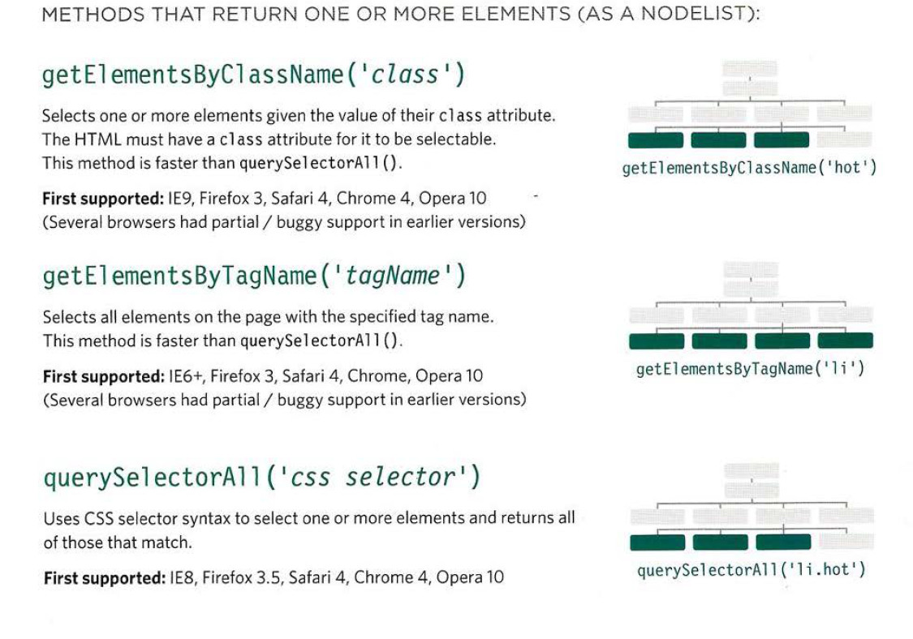Image courtesy of Jon Duckett: "Javascript and jQuery", John Wiley & Sons Inc 2014
DOM Queries
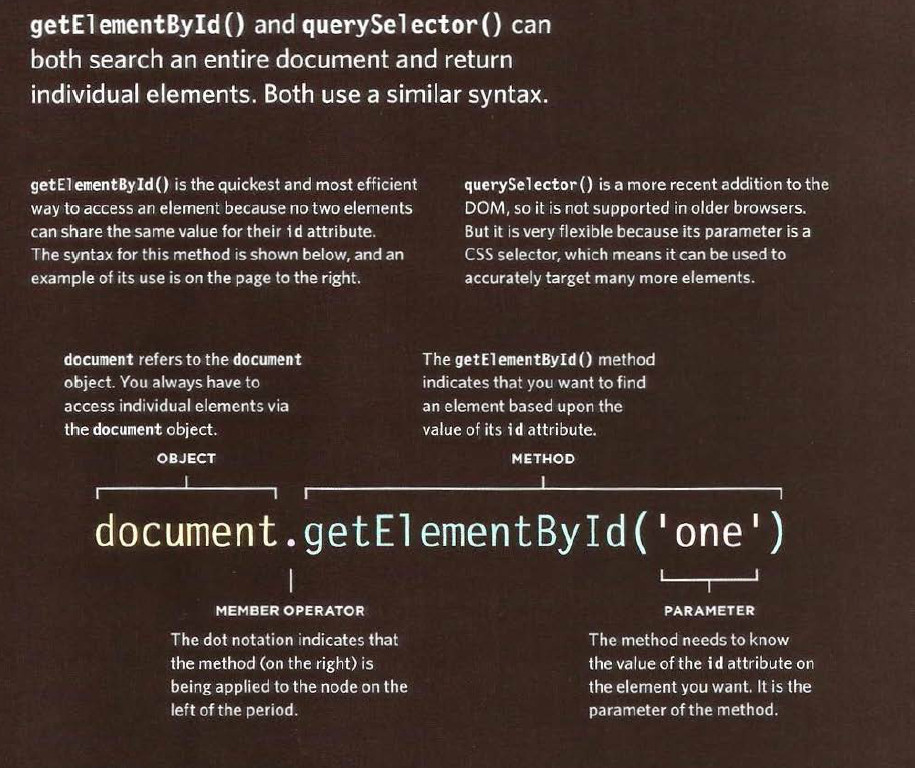Image courtesy of Jon Duckett: "Javascript and jQuery", John Wiley & Sons Inc 2014
DOM Queries
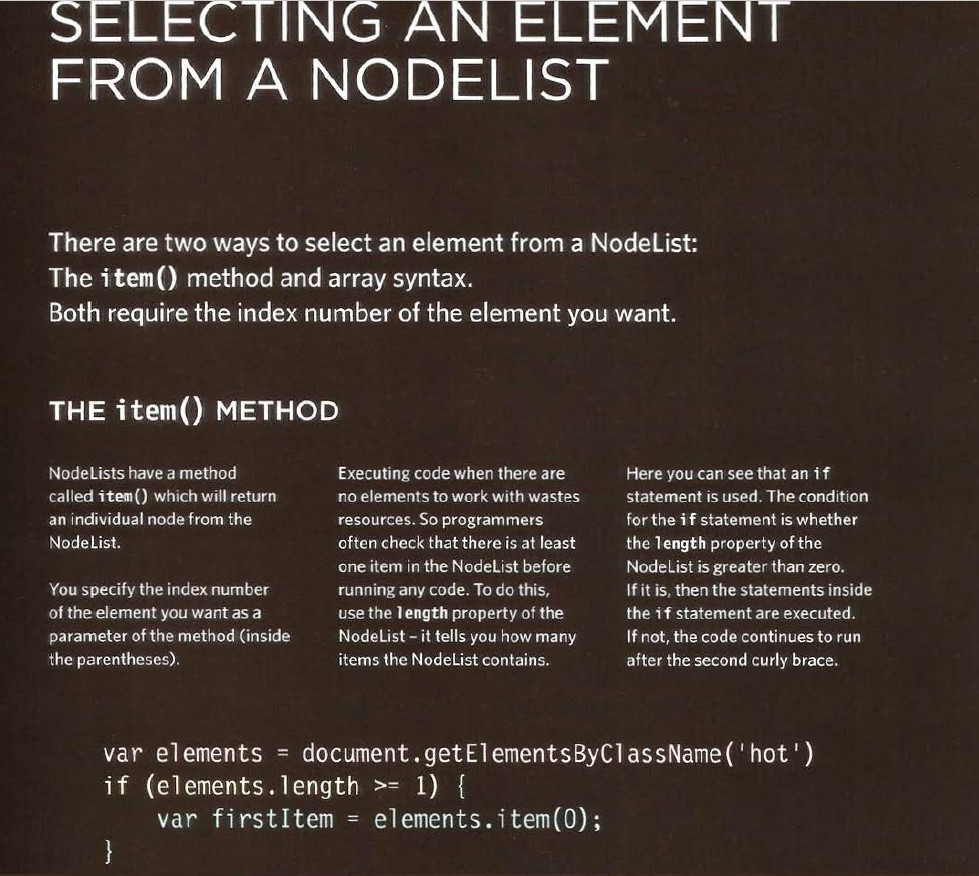Image courtesy of Jon Duckett: "Javascript and jQuery", John Wiley & Sons Inc 2014
***Checkpoint
1. Create a list of at least 5 items with html
2. Assign each item with either a class or an id or both
3. Make sure you have at least 2 identical class names
4. Select a single class and adjust it's css with vanilla js
5. Select a single id and adjust its css with vanilla js
6. Wrap your code in one or more relevantly named functions
7. Comment your code and push to git in a new repo named dom-queries
Creative Code Session
- Canvas and Audio capability
- Lets make an in browser sampler
- HTML design
- Js coded
- Git teams
app.cardSound = function(){
var snd = new Audio("video/click.wav"); // buffers automatically when created
snd.volume = 0.1;
var elements = document.getElementsByClassName('card');
//Play the audio file
var playTime = function(e){
snd.play();
};
// loop for all elements in array to apply event listener
for (var i = elements.length - 1; i >= 0; i--) {
elements[i].addEventListener("mouseenter", playTime, false);
}
};